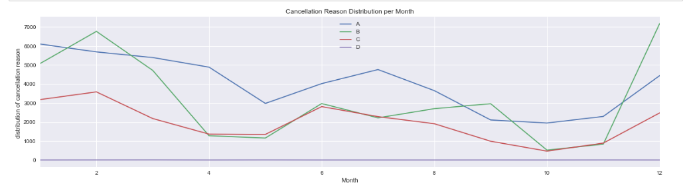

Flight-Data-Visualisation - analysis of US 2008 flight data
Summary:
For the data visualization project I decided to work with the RITA flight data provided by http://stat-computing.org/dataexpo/2009/the-data.html. I choose the year 2008. First step for me was to build an sql - lite database to explore on the data. On the site you find an overview on the variables provided. Additionally to the csv for the yearly data, the website also provides supplemental data for the airports, carriers, etc.
Aim of the project is to show how data can be transformed into a meaningful graphic.
Clearly summary of the feedback is, that the animated graphs are much more liked by the feedback givers. And this is clearly a field for further learning for me as I will have added value in my daily buisness out of it. Following a story to tell was quite a challenge for me and I think Tableau is really a handy tool when it comes to really good animated data stories. For D3 I have absolutely room for improvement. I hope the project is going to meet the reviewer's expectations.
Design:
First I was thinking about what could be in the data which is interesting to analyse. First step for me was to take the data into tableau to generate a first scribble. I faced some issues with the json export from the sql database I established to make a relation of the raw data to the additional information provided by the web site.
Theis rough scribble done in tableau shows that the data contains only flights starting in the USA and Chicago IL is the busiest airport. --> when loading the data into Python I found out there is a bug and I have to rework the raw data transformation. I cannot identify why, but the json export from SQL- DB delivered incomplete export. Therefore I decide to work with the csv export which looks fully ok.
Next step was to do an exploratory analysis of the data in python.
The data analysis process is divided into 5 steps (according to Kyrill Eremenko (data scientist at : https://www.superdatascience.com)
- identify
- prepare data
- analyse data
- visualize
- present
The graphs done in Python were giving me a first insight to the questions I wanted to answer. I discussed the steps mainly with Jocelyn and this is why I came to my final decision to make the combined graph of flights and the flight cancellation rate. This has been done in html with the use of Dimple JS. In the discussion, as well with Jocelyn, as with Marina, it came up that my investigation gave the basis to ask for more information. Therefore I made a pyhton dictionary for the cancellation reson per month and carrier. I did not make a graph of it as it was not part of my intent. As a quality manager I would use the table as entry point of further investigation on the root causes. But this is from my perspective not needed here.
There is a total of 2319612 flights in the dataset and the dataset contains 19 columns.
The data is composed of integers, objects and floats. The memory usage is 336.2+ MB.
The data contains Null values in the columns Cancellation Code, city and state. This is acceptable for the intended purpose so I will keep them.
To summarize the first investigation, the data is very tidy and can easily be used for further analysis.
The Cancellation Code contains not NaN values. This needs to be fixed.
Ok, looks good now. After I was using fillna I still got NaN, replace is the better choice in this case.
Investigation on the questions:
What are the airliners with the least cancellations?
Is there any relation between time of the year and cancellation?
Is there a timely insight on flight frequency over the months?
Which airports are the busiest ones?
What are the airliners with the least cancellations?
For better comparison I am calculating the cancellation rate.
I have shown the first graphs to my friend Jocelyn (not involved in data analytics at all) who volunteers as feedback giver.
It was not clear on first sight what the intention of the graphs are. They were not speaking for themselves to her. And after a discussion what would be easier to understand, a graph with the numbers of cancellations or the cancellation rate by carrier, I conclude that a two in one graph with the stacked bars on the one hand and the line graph on the other hand included as visualizing the rate as well might be a good choice.
Meanwhile I began to read the book story telling with data by Cole Nussbaum Knaflic (who was also an interview partner in the Udacity course). Following her introduction and her examples of before and after graphics the idea to have the two in one graph with decent coloring might be the best choice. I will prepare that graph with dimple.js as it will provide some interaction for the reader as well.
From these graphs, we see a trend to increasing cancellation rate during the summer and winter holiday season. It would be nice to investigate on the reasons behind the cancellations.
There is a clear peak in the cancellation rate in the winter month, which is reasonable. Bad weather with Ice and Snow can lead to a high cancellation rate. Whereas the light peak in June needs to be further investigated.
The assumption of bad weather having influence on the cancellation rate in winter looks as if it is highly correlated to the winter months. Whereas the peak in summer is more due carrier reasons whatever that means, weather and NAS are involved as well whereas security reasons influence is nearly Null.
After feedback about the wish to see the reason for flight cancellation I am providing the table containing the dictionary for flight cancellation per carrier and per month.
please find here the overview of the busiest airports in US 2008
https://public.tableau.com/profile/michaela.lueck#!/vizhome/Flights2008airports/Blatt1
Feedback:
Feedback Section:
What do you notice in the visualization?
Marina: Data is available in different relations and views. Bar charts are more convenient to look at. The interactive part, especially the airport view was nice.
Jocelyn: From the visualizations, I can follow a pattern, which appears to be repeated, or at least similar,throughout the graphics. It makes the relationship between 'flights and cancellation' seem more vivid and understandable. I also see how this relationship and the reasons are clearly portrayed through the year. From the first bar chart is is clear some carriers cancel more than others.
Andre: There seems to be one airline, that has a huge amount of flights in 2008. Much more then any other. Two airlines have a very small amount of flights. The rest have nearly the same amount of flights.
What questions do you have about the data?
Marina: I would like to know more about the following years unitl 2018 as flights got more and more. The relationship to the customer satisfaction would be interesting to know. Is the airline healthiness related to the cancellation rate? (f.e. is bancrupcy somehow related to the cancellation rate).
Jocelyn: I, too, expected a rise in cancellation in the winter months, but the 'weather related' cancellation rises in summer show that the summer weather can produce extreme conditions unsuitable for flying. I wonder too, if airlines are cancelling for the same reasons at the same time, though this is undoubtedly so in weather related issues. I have questions arising that are off-shoots from the data, this makes me wonder more deeply why certain non weather-related cancellations are happening in similar peaks and troughs
Andre: My question would be, how big the airlines are and if there is a correlation between win and loss of the airline and the number of delays and how the weather in the different months was.
What relationships do you notice?
Marina: The relation between the first two graphs is unclear. Later on the story is developing along the data and I was able to follow the analysis path
Jocelyn: The trends of troughs and peaks in flights, cancellations and reasons for cancellations seem to follow a consistent pattern with each other. There is a clear relationship with weather related issues which is understandable. There is an interesting relationship between carrier and cancellation, if I were in charge of booking tickets this would be a useful representation, but I would also want to check why the differences - that is, I would like to see if some airlines cancelled more often for one reason than another - when at the same time of year.
Andre: In the first graph, Flights and Cancellation Rate 2008 per carrier, I cannot see any relationship. Number of flights and number of delays semm not to bee correlated. In the second graph, it seems, that the cancellation rate rises in winter month. In summer, there is a peak in June. It would be interesting to see, what weather conditions where prevailing.
What do you think is the main takeaway from this visualization?
Marina: The interactive (Tableau) card was my personal favourite. This will be something I remember even next week J
Jocelyn: There is a clear relationship between flights and peoples' activities, eg holiday time. Also, as previously stated a clear relationship with weather. Winter is not the best time to fly, spring and autumn are better than high summer.
Andre: My main takeawa is, that there is no relationship between number of flights and cancellation rate. A thing I wouldn't have predicted. An other thing is, that there are more cancellations in cold month. Would be nice to know, if it caused by the weather.
Michaela: Feedback implemented

Is there something you don’t understand in the graphic?
Marina: n/a all graphs are well labled, the view on the details was much appreciated in the html graphs
Jocelyn: The graphics are a good explanation of the data. However, because I have no knowledge of Data Analysis I tend to think 'of track' and have been curious about 'reasons' for some of the data. For example, I am curious as to whether the cancellation variation between carriers is due to specific regional variation. It could be that more northerly focused airlines have more weather- related cancellations in winter and more southerly focused ones in late summer (hurricane season?). This however, has not been part of the study and collected data, it is just my curiosity, which has been triggered by looking at the data and graphics. Michaela has enlightened me on some of these issues and also confirmed that some of my querries are outside the sphere of the data provided.
Andre: The graphs for themselves leave no open questions, but as I mentioned before, it would be interesting to see, if there are correlations to weather data to the cancellation rate and win and loss of the different airlines to their own cancellation rate.
Ressources:
Tools used for this project:
- Evernote - as repository for notes and collection of ideas
- SQL lite - data overview and pre-treatment
- Python - EDA
- V code - text editor for coding (html, javascript, dimple.js, CSS) / Notepad ++
- Tableau - first scribble, preparation to collect feedback
- other ressources: stackoverflow, udacity course materials, datacamp, superdata scienece, google research